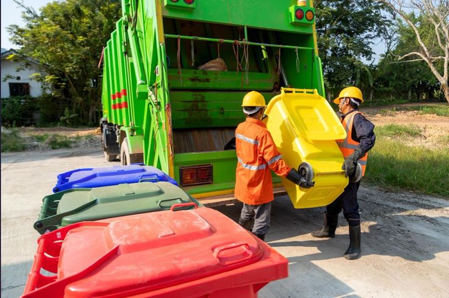
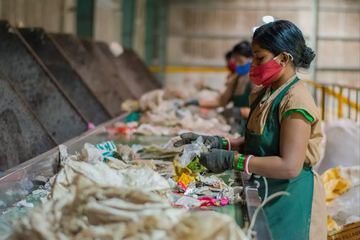

Message éducatif
Expliquez simplement pourquoi protéger son environnement améliore la santé, l'image et la qualité de vie.
Votre Partenaire Propreté et Recyclage
Avec Recyclonet, vous choisissez une équipe sérieuse qui vous aide à garder vos espaces propres, accueillants et bien organisés. Nous accompagnons les maisons, les bureaux, les commerces et les institutions avec des interventions fiables, un service humain et une vraie attention à votre satisfaction.

Collecte, tri, nettoyage de site, formation et accompagnement simple pour vous faire gagner du temps et de la tranquillité.
Sensibilisation
Cette zone est pensée pour accueillir une vidéo forte du client afin de sensibiliser les visiteurs à la propreté, à la gestion des déchets et à l'impact positif d'un environnement mieux entretenu.
Expliquez simplement pourquoi protéger son environnement améliore la santé, l'image et la qualité de vie.
Une belle vidéo rend la marque plus crédible et montre que Recyclonet agit avec conviction.
Ce que nous faisons pour vous
Que vous vouliez garder votre maison propre, mieux gérer vos déchets, former une équipe ou offrir une meilleure image à votre entreprise, Recyclonet vous propose des solutions simples et bien exécutées.
Nous enlevons vos déchets et encombrants avec organisation, pour vous libérer rapidement de ce qui encombre votre espace.
Nous rendons vos maisons, vos bureaux, vos commerces et vos espaces extérieurs plus propres, plus agréables et plus présentables.
Nous vous aidons à mieux trier et à mieux valoriser certains déchets pour un service plus responsable.
Nous développons aussi des formations utiles et une future gamme de produits pour prolonger les bonnes pratiques au quotidien.
Pourquoi devenir client
Vous travaillez avec une équipe qui comprend vos attentes et qui cherche à vous laisser une bonne impression à chaque passage.
Vous savez tout de suite ce que nous pouvons faire pour vous, que ce soit pour un besoin urgent, régulier ou une formation.
Nous facilitons votre prise de contact, votre demande de devis et le lancement rapide de votre intervention.
Pour qui
Pour garder les espaces de vie propres, fonctionnels et plus agréables pour tous les occupants.
Pour offrir à vos clients et à vos collaborateurs un lieu plus net, plus sérieux et plus accueillant.
Pour maintenir un cadre plus sain, mieux organisé et plus respectueux des bonnes pratiques environnementales.
Zones desservies
Nous pouvons accompagner les clients de Pétion-Ville et des zones voisines selon le type d'intervention, le volume et la fréquence souhaités.
Zone prioritaire pour les demandes résidentielles, commerciales et professionnelles.
Interventions possibles selon le planning, le volume à traiter et la disponibilité de l'équipe.
Étude sur demande pour les clients qui souhaitent une solution ponctuelle ou récurrente.
Exemples de résultats
Un environnement de travail propre aide vos équipes à se sentir mieux et renforce votre image professionnelle.

Nous vous aidons à retrouver un espace plus libre, plus sain et plus facile à gérer au quotidien.

Une démarche utile pour les clients qui veulent allier propreté, responsabilité et meilleure organisation.
Confiance client
"Le service a été organisé, rapide et respectueux. Notre espace était nettement plus propre après l'intervention."
Client bureau"Nous avons apprécié la disponibilité et la simplicité du contact. On sent une vraie volonté de bien servir."
Client résidence"Une bonne base pour une collaboration durable, surtout pour les structures qui ont besoin d'un partenaire fiable."
Client commercialQuestions fréquentes
Il suffit de nous contacter via le formulaire, WhatsApp ou téléphone pour décrire votre besoin.
Oui, Recyclonet accompagne les bureaux, les commerces et les institutions en plus des clients résidentiels.
Oui, nous pouvons étudier des interventions ponctuelles comme des besoins récurrents.
Passez à l'action
Demandez un devis, présentez votre besoin et voyons ensemble la solution la plus simple pour rendre votre espace plus propre, plus pratique et plus valorisant.